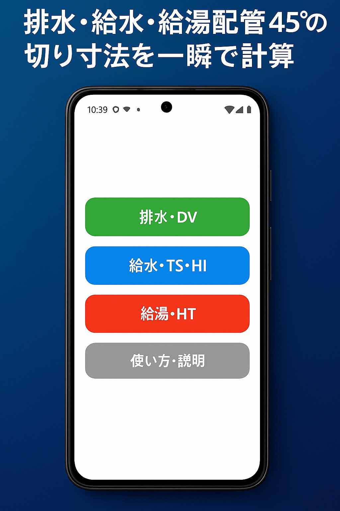
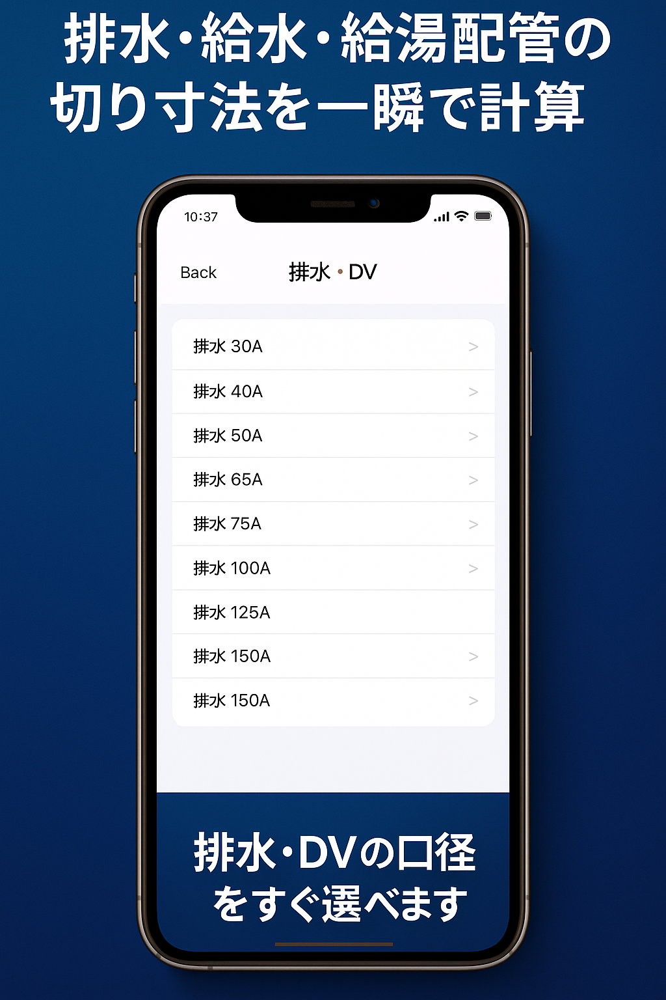
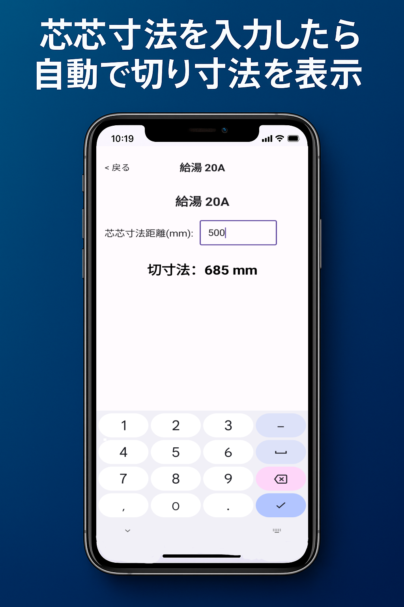

基本の使い方
上から順に操作してください。
1
アプリを開く
「排水・DV」「給水・TS・HI」「給湯・HT」から、計算したい配管を選びます。

2
口径を選ぶ
一覧から使用する口径を選びます。画像は排水・DVの口径選択例です。

3
寸法を入力する
芯芯寸法距離を入力すると、切寸法が画面に表示されます。入力値と選択した口径を必ず確認してください。

計算結果を使う前に
現場条件を必ず確認してください。
メーカーによって継手寸法が異なる場合があります。使用する製品の資料、図面、仕様書と照合してください。
メーカーによって継手寸法が異なる場合があります。使用する製品の資料、図面、仕様書と照合してください。
困ったとき
配管45°のよくある質問をご確認ください。解決しない場合はお問い合わせください。